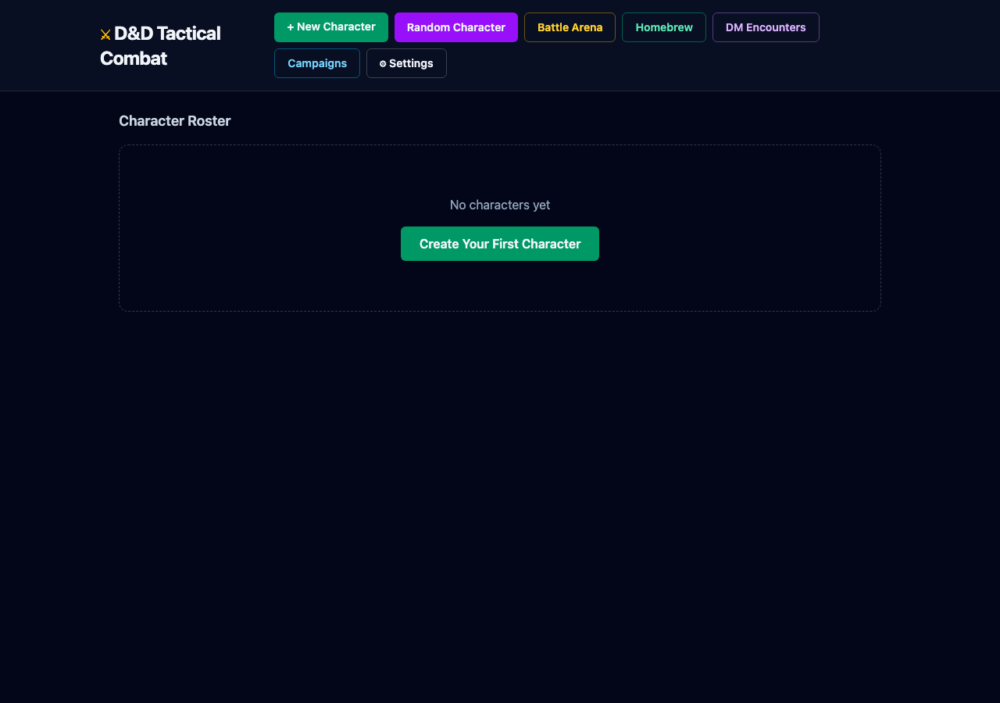
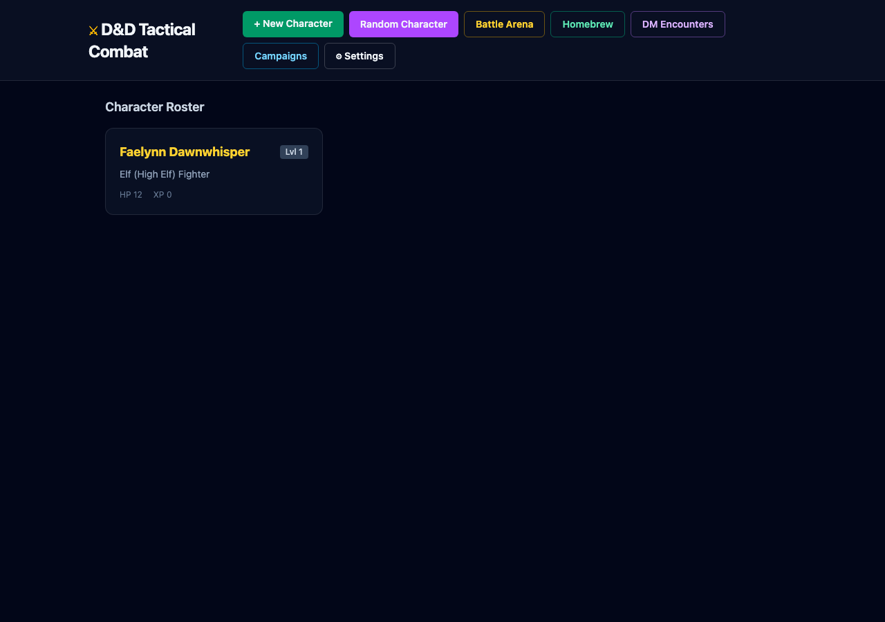
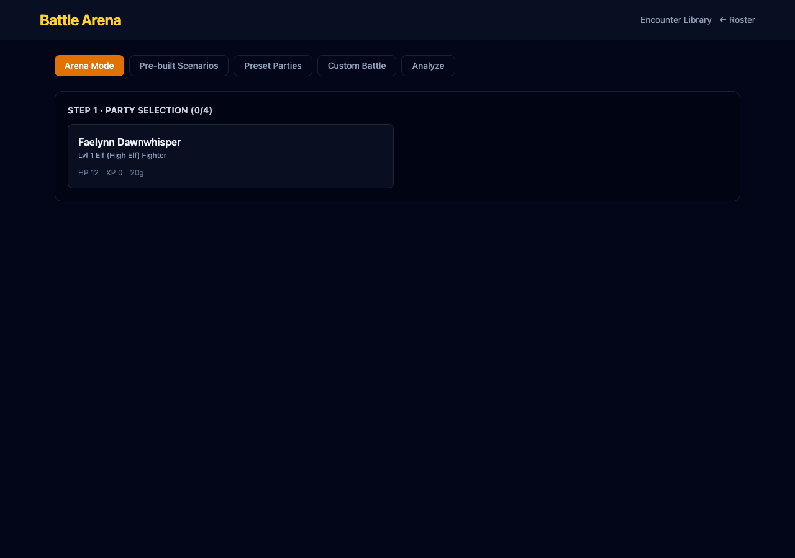
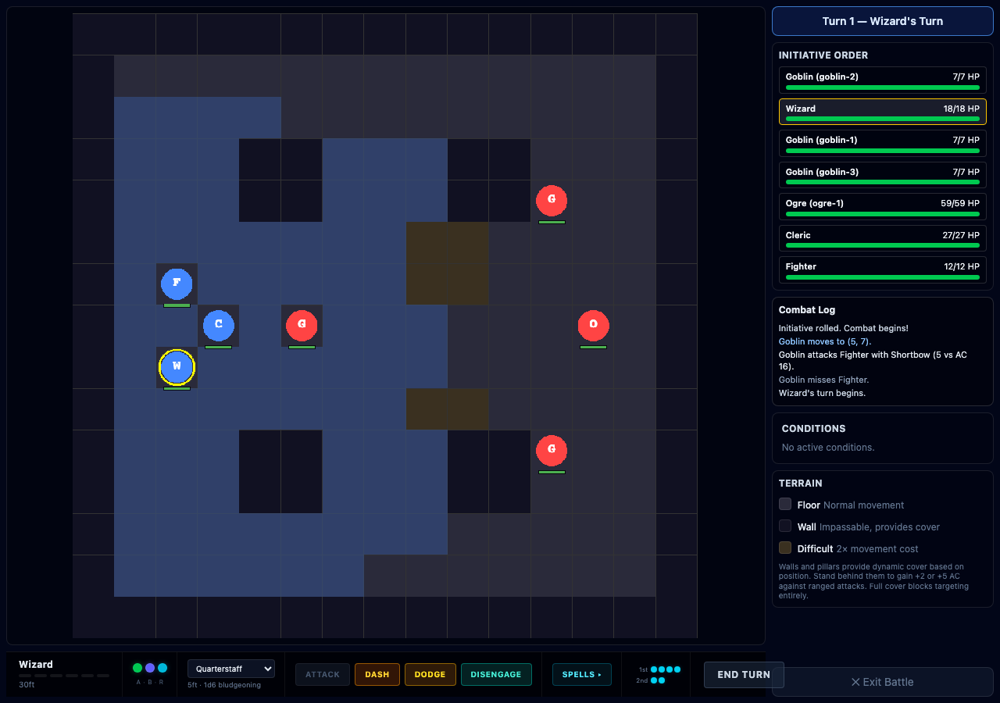
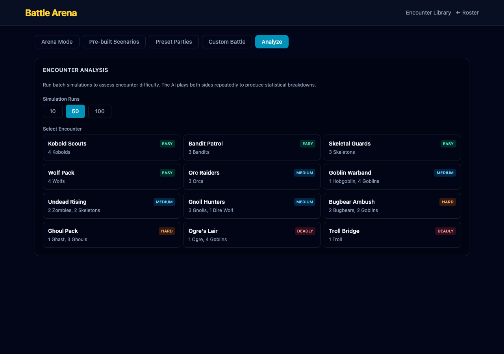
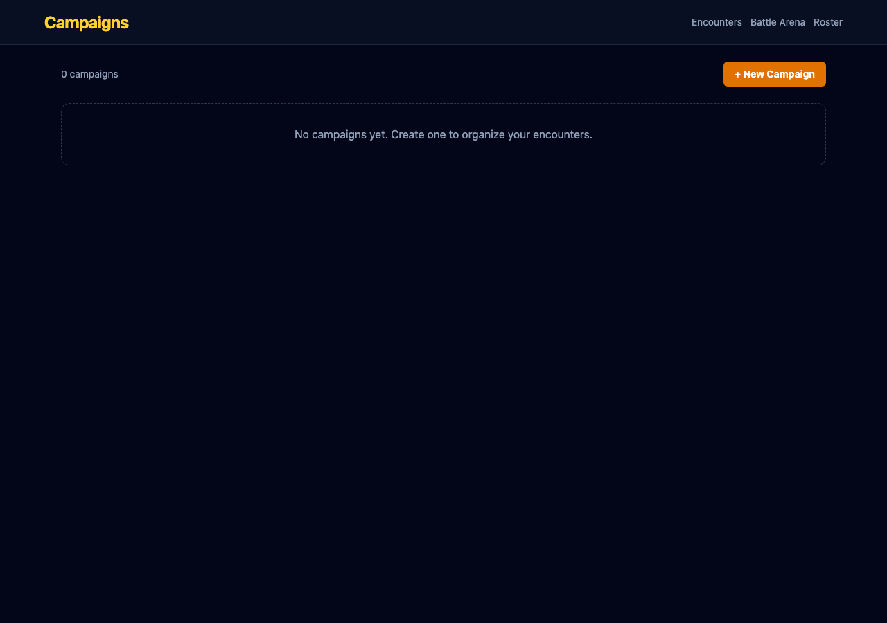

All features from PRs #29-32 (8 issues resolved). Batch 1 Batch 2 Batch 3 Batch 4
One-click "Random Character" button on the Roster page. Generates a complete level 1 character with race/class-appropriate stats, equipment, spells, and thematic names.


Fighter/Wizard/Cleric presets at levels 1, 3, and 5 with properly scaled HP, spell slots, and class features. New "Preset Parties" tab on the Battle page.

Auto-calculates encounter difficulty from monster CRs using 5e DMG XP thresholds and encounter multipliers. Shows live difficulty badges on encounter cards.

Arena and Battle Arena consolidated into a single /battle page. Setup (party selection, encounters, scenarios) and combat share the same page with tab-based navigation. /arena redirects automatically.

Full enemy control panel for DM mode. Move enemies on the grid (purple overlay), select weapons and targets, execute attacks manually. Purple-themed UI distinguishes DM controls from player controls.
Healing Potions, Greater Healing Potions, Scroll of Fireball/Shield, and Antitoxin. Consumable panel in combat HUD shows items with action type badges (A/BA/R). Preset characters carry class-appropriate consumables.

Batch simulation engine runs N combats and reports win rate, average rounds, casualties, damage distribution, and per-unit breakdowns. New "Analyze" tab on the Battle page.

Create campaigns that link a party to an ordered sequence of encounters. Full CRUD with IndexedDB persistence, progress tracking (pending/completed/skipped), and battle integration that auto-marks encounters on victory.
